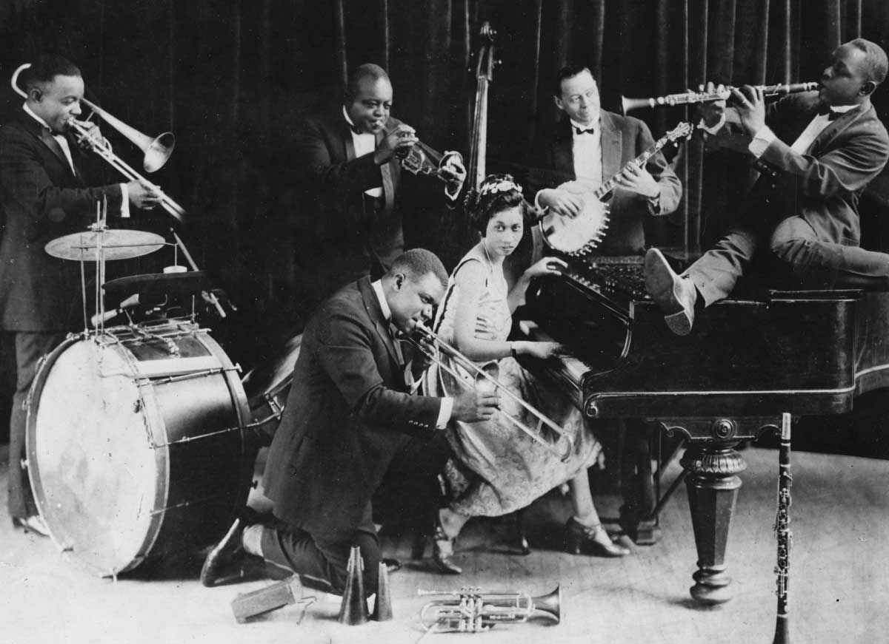

The mid-1950s saw the emergence of hard bop, which introduced influences from rhythm and blues, gospel, and blues to small groups and particularly to saxophone and piano. Modal jazz developed in the late 1950s, using the mode, or musical scale, as the basis of musical structure and improvisation, as did free jazz, which explored playing without regular meter, beat and formal structures. Jazz-rock fusion appeared in the late 1960s and early 1970s, combining jazz improvisation with rock music's rhythms, electric instruments, and highly amplified stage sound. In the early 1980s, a commercial form of jazz fusion called smooth jazz became successful, garnering significant radio airplay. Other styles and genres abound in the 2000s, such as Latin and Afro-Cuban jazz.
The origin of the word jazz has resulted in considerable research, and its history is well documented. It is believed to be related to jasm, a slang term dating back to 1860 meaning "pep, energy". The earliest written record of the word is in a 1912 article in the Los Angeles Times in which a minor league baseball pitcher described a pitch which he called a "jazz ball" "because it wobbles and you simply can't do anything with it".
The use of the word in a musical context was documented as early as 1915 in the Chicago Daily Tribune. Its first documented use in a musical context in New Orleans was in a November 14, 1916, Times-Picayune article about "jas bands". In an interview with National Public Radio, musician Eubie Blake offered his recollections of the slang connotations of the term, saying: "When Broadway picked it up, they called it 'J-A-Z-Z'. It wasn't called that. It was spelled 'J-A-S-S'. That was dirty, and if you knew what it was, you wouldn't say it in front of ladies." The American Dialect Society named it the Word of the 20th Century.
Jazz music genre has 2 elements:
Although jazz is considered difficult to define, in part because it contains many subgenres, improvisation is one of its defining elements. The centrality of improvisation is attributed to the influence of earlier forms of music such as blues, a form of folk music which arose in part from the work songs and field hollers of African-American slaves on plantations. These work songs were commonly structured around a repetitive call-and-response pattern, but early blues was also improvisational. Classical music performance is evaluated more by its fidelity to the musical score, with less attention given to interpretation, ornamentation, and accompaniment. The classical performer's goal is to play the composition as it was written. In contrast, jazz is often characterized by the product of interaction and collaboration, placing less value on the contribution of the composer, if there is one, and more on the performer. The jazz performer interprets a tune in individual ways, never playing the same composition twice. Depending on the performer's mood, experience, and interaction with band members or audience members, the performer may change melodies, harmonies, and time signatures.
Since the emergence of bebop, forms of jazz that are commercially oriented or influenced by popular music have been criticized. According to Bruce Johnson, there has always been a "tension between jazz as a commercial music and an art form". Regarding the Dixieland jazz revival of the 1940s, black musicians rejected it as being shallow nostalgia entertainment for white audiences. On the other hand, traditional jazz enthusiasts have dismissed bebop, free jazz, and jazz fusion as forms of debasement and betrayal. An alternative view is that jazz can absorb and transform diverse musical styles. By avoiding the creation of norms, jazz allows avant-garde styles to emerge.
From 1920 to 1933, Prohibition in the United States banned the sale of alcoholic drinks, resulting in illicit speakeasies which became lively venues of the "Jazz Age", hosting popular music, dance songs, novelty songs, and show tunes. Jazz began to get a reputation as immoral, and many members of the older generations saw it as a threat to the old cultural values by promoting the decadent values of the Roaring 20s. Henry van Dyke of Princeton University wrote, "... it is not music at all. It's merely an irritation of the nerves of hearing, a sensual teasing of the strings of physical passion." The New York Times reported that Siberian villagers used jazz to scare away bears, but the villagers had used pots and pans; another story claimed that the fatal heart attack of a celebrated conductor was caused by jazz.
In 1919, Kid Ory's Original Creole Jazz Band of musicians from New Orleans began playing in San Francisco and Los Angeles, where in 1922 they became the first black jazz band of New Orleans origin to make recordings. During the same year, Bessie Smith made her first recordings. Chicago was developing "Hot Jazz", and King Oliver joined Bill Johnson. Bix Beiderbecke formed The Wolverines in 1924.
The outbreak of World War II marked a turning point for jazz. The swing-era jazz of the previous decade had challenged other popular music as being representative of the nation's culture, with big bands reaching the height of the style's success by the early 1940s; swing acts and big bands traveled with U.S. military overseas to Europe, where it also became popular. Stateside, however, the war presented difficulties for the big-band format: conscription shortened the number of musicians available; the military's need for shellac (commonly used for pressing gramophone records) limited record production; a shortage of rubber (also due to the war effort) discouraged bands from touring via road travel; and a demand by the musicians' union for a commercial recording ban limited music distribution between 1942 and 1944.